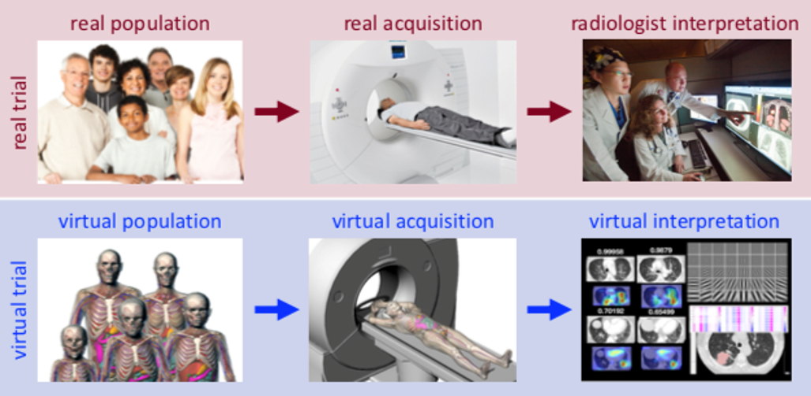
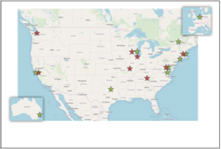

Research Overview

The broad objective of the Center for Virtual Imaging Trials is to develop and provide a comprehensive virtual platform to assess the clinical performance of medical imaging technologies or applications from design to use. In its first phase, the Center focuses on Computed Tomography (CT).
The accelerating complexity of medical imaging devices and methods has largely outpaced the field’s ability to evaluate and optimize their design and clinical use. Doing so through clinical trials is often not feasible or definitive due to ethical limitations, expense, time requirements, or a fundamental lack of ground truth (exact patient anatomy and condition). Most current approaches to assess imaging technologies outside of clinical trials rely on simplistic models and subjective perception of image aesthetics, the results from which cannot readily predict clinical efficacy.
To fill this gap, we will establish the Center for Virtual Imaging Trials with the broad objective to develop a comprehensive virtual platform for assessment of medical imaging systems and applications; our initial focus is on computed tomography (CT), both due to its widespread medical utility and its status as the largest source of medical radiation. Virtual imaging trials offer an efficient means to evaluate imaging concepts and technologies in silico by simulating the patient, imaging system, and interpreter. Such virtual trials can be conducted quickly and cost effectively on a computer, providing researchers a practical way to answer fundamental questions using the precise controls and known ground truth possible only in the virtual domain. These virtual trials enable objective optimization of new real imaging technologies (hardware, and software) to minimize radiation risk while providing the desired quantitative accuracy. By accelerating and improving imaging technologies’ evaluation and optimization, virtual trials support quality, safety, and effective practice of patient-centered care.
To achieve its objective, the Center will develop, refine, and disseminate the essential resources to realistically model and represent a) patients, b) imaging systems, and c) image analysis and interpretation. These resources comprise the three Technology Research and Development (TRD) projects. The TRDs will work synergistically with the Collaborative Projects (CPs), and resources will be made available to Service Projects (SPs). A Technology Training and Dissemination (TTD) component will distribute the Center’s resources and provide the necessary training. Administration provides infrastructure, oversight, and integration. The overall specific aims are to (1) develop, consolidate, and streamline the required components to enable virtual imaging trials of existing and emerging CT imaging methods, (2) position virtual trials as an alternative methodology to quantify, evaluate, and optimize CT imaging in terms of clinical quality and safety, and (3) disseminate to the research community validated tools for efficient virtual trials in CT and train researchers to use them effectively. Using state-of-the-art simulation and analysis methods, the Center will foster rigorous and reproducible scientific design, prediction, and practice and will provide the first comprehensive platform to assess the complete trajectory of an imaging technology from design to use.
TRD1: Virtual Patients. TRD1 develops a suite of tools to produce realistic, customizable virtual subjects or phantoms for CT imaging research. It builds upon our popular 4D extended cardiac-torso (XCAT) phantoms [23-25] that have found broad use in imaging research, resulting in over 130 papers in PubMed excluding our own. Although widely used, the current XCAT library (60 adult and 90 pediatric models in total) does not cover a range of anatomies reflective of the population at large nor does it fully model stages of pregnancy, patient motions/deformations, blood flow/contrast perfusion, or tissue heterogeneities.
Drawing from the large, existing Duke University CT image database, we will greatly expand the XCAT library to encompass a broad range of age, height, and weight combinations for both sexes. indicative of patients seen in a hospital-scale population. We will further develop highly detailed models for pregnancy, update the XCAT motion models, expand the circulatory system to more realistically simulate the dynamics of blood flow and contrast perfusion, and develop new methods to model the tissue heterogeneity within the body including disease-related abnormalities. These tools will be packaged into a framework from which researchers will be able to generate virtual populations consisting of unlimited numbers of realistic phantoms, on demand, and with user-defined anatomical characteristics, lesions, motion, and contrast.
TRD2: Virtual Scanners. Taking the existing and new resources of TRD1 as an input and building on the team’s work to date, TRD2 will develop a rapid, accurate, and realistic CT simulator capable of generating 3D and 4D CT images of highly detailed patient-specific anatomy and function. The simulator will emulate specific manufacturer and scanner configurations and a variety of clinical protocols. The work builds on our considerable expertise [26-30] in developing simulation tools for assessing image quality and dose in x-ray based technologies. Despite the reach and utility of these tools, however, current simulators are limited in their accuracy and realism. This is due to the computationally intensive nature of radiation transport methods and the needed spatial and temporal resolution for generating realistic images. To overcome these limitations, in this TRD, we combine ray-tracing and Monte Carlo approaches into a hybrid simulation platform where high spatial details are provided by ray-tracing while precise scatter and dose estimates are provided by Monte Carlo, both implemented in a GPU environment for maximum speed. The hybrid simulator will have fine control for all key scanner parameters (e.g., kV, mA, pitch, TCM, recon, etc.). Specific focus will be placed on realism of scanner simulations for both existing and new CT technologies. Towards that end, in close cooperation with manufacturers, we will encode manufacturer- and scanner-specific configurations as individual modules. That will include respective manufacturer reconstruction algorithms. The simulator, which will have additional options for generic and user-defined configurations, will be made accessible to the research community with both GUI-based and script-based controls.
TRD3: Virtual Interpretations. To be effective, a VIT platform should emulate the entire imaging chain from patient to imaging system to clinical interpretation. With the first two aspects undertaken by TRDs 1 and 2, this TRD will develop and provide “virtual interpreters” to deduce clinically-relevant information from the image data. We have had considerable prior success in the fields of observer models, machine-learning, and radiomics quantification. We have previously demonstrated the clinical potential of these approaches, including validations with radiologists and artificial interpretations.31-33 However, prior offerings have been isolated to individual projects and not consolidated into a single virtual interpreter toolset. In this TRD, we will advance the state-of-the-art and provide ready access to effective resources in task-based performance analysis. We will develop and consolidate an interface and comprehensive toolset to extract and analyze virtual image data. The toolset will include principle-informed and data-informed observer models, radiomics quantification of high-dimensional morphology and texture, and lesion and organ segmentation tools. The project incorporates computer vision and machine learning processes that use knowledge from large datasets to quantify imaging performance and its underlying contributing factors. This TRD further integrates its virtual interpreter toolset with the virtual patient (from TRD1) and virtual CT system (from TRD2) into a consolidated platform for accurate and realistic virtual CT trials and datasets. The framework aims to enable evaluation and optimization across a wide variety of CT technologies. Further, as real-world clinical trials are designed to evaluate imaging systems in the context of achieving certain clinical tasks, TRD3, in its last Aim, tests the equivalency of the consolidated platform in the context of two representative clinical tasks of liver and lung lesion detection.
Technology Training and Dissemination (TTD). The Center for Virtual Imaging Trials will disseminate the Center’s tools and resources for virtual imaging and the advances developed through TRDs 1-3. It will educate and train researchers how to utilize the tools with user input or integrate them with user methods, thus providing the necessary support to users to effectively utilize the resources in their own research. The Center’s training plan includes in-person training through workshops (at Duke and at national meetings), residencies at Duke, and ongoing updates through seminars and scientific forums. These training activities will leverage our strong and close ties with other departments, programs, and entities within Duke; seminars and forums will be accessible in real-time via web-conferencing to interested parties at other institutions. The Center’s dissemination plan includes resources to download our simulation tools, documentation (user manuals, video guides), support for running and execution, and access to preconfigured datasets or subcomponents of the simulation tools (ideal for Service Projects). The resources to be disseminated and trained on include the 3D and 4D patient models (TRD1), the CT simulation programs and pre-generated CT images (TRD2), and the task-based analysis tools (TRD3). Dissemination will be via the Center website after applicable licensing or registration (see TTD component and Resource Sharing Plan), publicly accessible user-community forums, publications, and conference presentations. We will provide collaborative support on grants/projects initiated by end users, and solicit collaboration ideas through a form on the Center’s website.
Colaborative Projects

CP1. Optimize multiple-material decomposition in spectral CT
CP2. Develop effective motion compensation techniques in interventional CT
CP3. Develop effective deformable image registration techniques in radiation therapy CP4. Determine accurate CT acquisition for cardiac Fractional Flow Reserve
CP5. Validate pulmonary vascular and cardiac volume in non-contrast non-gated CT CP6. Quantitatively optimize PET/CT for improved cancer diagnosis and therapy
CP7. Optimize photon counting CT (PCCT) for radiomic quantification
CP8. Assess scaling requirement for large-scale deep learning through virtual datasets CP9. Assess and optimize robustness of radiomic features across CT scanners
Service Projects
SP1. Validate noise stabilization and autocalibration techniques in COPD evaluation
SP2. Optimize coronary artery interventions cardiorespiratory motion patterns
SP3. Personalize respiratory motion correction for low-dose PET/CT
SP4. Assess radiation risk to astronauts for deep space missions
SP5. Design new imaging in radiation therapy considering respiratory-cardiac motion
SP6. Develop advanced reconstruction methods for four-dimensional cone beam CT
SP7. Develop advanced CT dosimetry techniques
SP8. Assess impact of CT system design on AI processing of CT images
SP9. Personalize motion models and imaging for image guided radiation therapy
SP10. Image similarity filter optimization for low-dose perfusion CT